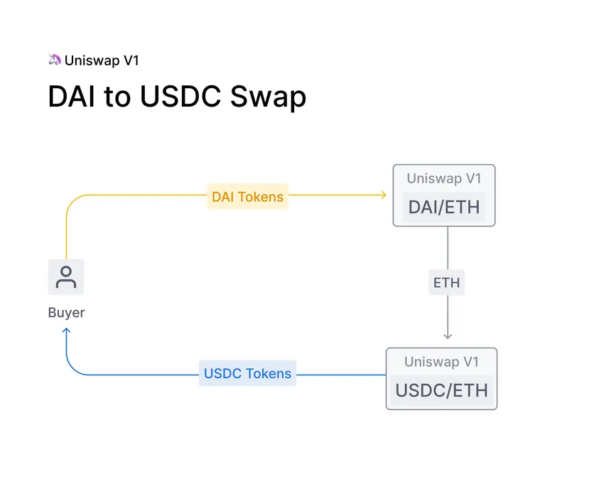

>> Uniswap Overview
Hello WEB3, In this blog series, we are going to look overview of 4 versions of Uniswap protocola. It is a decentralized exchange (DEX) protocol built on the Ethereum blockchain, enabling users to trade cryptocurrencies directly from their wallets without intermediaries. Each version of Uniswap has introduced significant improvements and innovations. Here's an in-depth overview of Uniswap v1, v2, v3, and the upcoming v4.
You can see my uniswap-v2 code walk-through blog page, which makes clear to understand the Uniswap-V2 protocol.
>> Uniswap-V1
Uniswap V1 is the first version of the protocol, launched in November 2018 at Devcon 4. Uniswap v1 introduced the constant product market maker model, where each liquidity pool is a pair of ERC-20 tokens. The product of the quantities of the two tokens remains constant (x * y = k), which defines the price.
>> V1 Features
- Add support for any ERC20 token using the Uniswap factory
- Join liquidity pools to collect fees on ETH-ERC20 pairs
- Liquidity-sensitive automated pricing using constant product formula
- Trade ETH for any ERC20 without wrapping
- Trade any ERC20 for any ERC20 in a single transaction
- Trade and transfer to a different address in a single transaction
- Lowest gas cost of any decentralized exchange
- Support for private and custom uniswap exchanges
- Buy ERC20 tokens from any wallet using ENS
- Partially verified smart contracts written in Vyper
- Mobile-optimized open source frontend implementation

>> How it works
Uniswap is made up of a series of ETH-ERC20 exchange contracts. There is exactly one exchange contract per ERC20 token. If a token does not yet have an exchange it can be created by anyone using the Uniswap factory contract. The factory serves as a public registry and is used to look up all token and exchange addresses added to the system.
Each exchange holds reserves of both ETH and its associated ERC20 token. Anyone can become a liquidity provider on an exchange and contribute to its reserves. This is different than buying or selling; it requires depositing an equivalent value of both ETH and the relevant ERC20 token. Liquidity is pooled across all providers and an internal "pool token" (ERC20) is used to track each providers relative contribution. Pool tokens are minted when liquidity is deposited into the system and can be burned at any time to withdraw a proportional share of the reserves.
Exchange contracts are automated market makers between an ETH-ERC20 pair. Traders can swap between the two in either direction by adding to the liquidity reserve of one and withdrawing from the reserve of the other. Since ETH is a common pair for all ERC20 exchanges, it can be used as an intermediary allowing direct ERC20-ERC20 trades in a single transaction. Users can specify a recipient address if they want to receive purchased tokens at a different address from the one used to make a transaction.
Uniswap uses a "constant product" market making formula which sets the exchange rate based off of the relative size of the ETH and ERC20 reserves, and the amount with which an incoming trade shifts this ratio. Selling ETH for ERC20 tokens increases the size of the ETH reserve and decreases the size of the ERC20 reserve. This shifts the reserve ratio, increasing the ERC20 token's price relative to ETH for subsequent transactions. The larger a trade relative to the total size of the reserves, the more price slippage will occur. Essentially, exchange contracts use the open financial market to decide on the relative value of a pair and uses that as a market making strategy.
A small liquidity provider fee (0.30%) is taken out of each trade and added to the reserves. While the ETH-ERC20 reserve ratio is constantly shifting, fees makes sure that the total combined reserve size increases with every trade. This functions as a payout to liquidity providers that is collected when they burn their pool tokens to withdraw their portion of total reserves. Guaranteed arbitrage opportunities from price fluctuations should push a steady flow of transactions through the system and increase the amount of fee revenue generated.
Since Uniswap is entirely on-chain, prices can change between when a transaction is signed and when it is included in a block. Traders can bound price fluctuations by specifying the minimum amount bought on sell orders, or the maximum amount sold on buy orders. This acts as a limit order that will automatically cancel if it is not filled. It is also possible to set transaction deadlines which will cancel orders if they are not executed fast enough.
The reason only one exchange per token can be registered to the factory is to encourage providers to pool their liquidity into a single reserve. However, Uniswap has built in support for ERC20-to-ERC20 trades using the public pools from the factory on one side of the transaction and custom, user-specified pool on the other. Custom pools could have fund managers, use alternate pricing mechanisms, remove liquidity provider fees, integrate complex three dimensional fomo-based ponzi-schemes and more. They just need to implement the Uniswap interface and accept ETH as an intermediary asset. Custom pools do not have the same safety properties as the public ones. It is recommended users only interact with audited, open-source smart contracts.
>> Why we are moving to V2
- Uniswap v1 can simply hacked through price manipulations, front running and sandwich attacks.
- The prices in Uniswap v1 could be easily manipulated within a single block, making it unreliable as a price feed.
- Uniswap v1 only allowed for trading pairs between ERC-20 tokens and ETH. This meant that if users wanted to trade between two ERC-20 tokens, they had to conduct two separate trades (ERC-20 to ETH and then ETH to another ERC-20). This increased transaction costs and complexity.
- Uniswap v1 did not support flash loans or any mechanism to leverage liquidity pools for instant arbitrage opportunities within the same transaction.
- The routing mechanism in Uniswap v1 was basic and often resulted in suboptimal paths for trades, leading to higher slippage and costs.
- The overall functionality of Uniswap v1 was quite basic, and it did not support more advanced use cases or customization.
>> Uniswap-V2
The Uniswap V2 was launched in May, 2020 with a plethora. Uniswap v2 is a new implementation based on the same formula, with several new highlydesirable features. Most significantly, it enables the creation of arbitrary ERC20/ERC20 pairs, rather than supporting only pairs between ERC20 and ETH. It also provides a hardened price oracle that accumulates the relative price of the two assets at the beginning of each block. This allows other contracts on Ethereum to estimate the time-weighted average price for the two assets over arbitrary intervals. Finally, it enables “flash swaps” where users can receive assets freely and use them elsewhere on the chain, only paying for (or returning) those assets at the end of the transaction.
New features including TWAP (Time Weighted Average Price), Liquidity pools for non-native tokens which halves gas fees and slippage for token swaps, and Flash Swaps. In addition, this update removed native token functionality in favor of WETH (Wrapped Ether) and is written in Solidity - a welcome change for readability. The 0.3% fee model was shortly modified after release by members of the DAO, where 0.05% of the fee’s funds are reserved for the development of the Uniswap network.
You can read Uniswap-V2 walk-through blog post written by me.
>> Why we are moving to V3
- In v2, liquidity is spread evenly across the entire price range from 0 to infinity, regardless of actual trading activity. This means a large portion of the liquidity provided by liquidity providers (LPs) is rarely used, leading to inefficient capital usage.
- V2 offers a single fee tier (0.3%) for all trading pairs. This uniform fee structure may not be optimal for different types of trading pairs with varying levels of volatility.
- The evenly distributed liquidity can lead to higher slippage, especially for large trades, as the depth of liquidity at specific price points might be insufficient.
- With concentrated liquidity, the depth of liquidity at specific price points is increased, leading to better price execution and lower slippage for traders.
- LPs have a passive role, providing liquidity across the entire price range without the ability to manage their positions dynamically.
- Liquidity positions are represented as fungible ERC-20 tokens, meaning each LP's contribution is homogenous and cannot be customized.